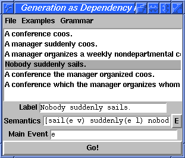

This package provides a very simple but high-level GUI that can accept input as strings or Oz terms and pass it to a user-defined procedure for further processing. Inputs can be stored in a list and saved into and loaded from files. In addition, the programmer can specify menus that allow the user to select options, which are also passed to the main procedure.
The main design principle of this package was to keep the interface specification as high-level as possible; the most low-level concept that the programmer has to deal with is a menu. This makes it possible to attach a newly built procedure to a graphical interface very easily, without having to think about any details of graphical interfaces. The flexibility of the interface is quite limited (hence the name). If it is not powerful enough for your needs, I recommend you use one of the many more powerful GUI libraries available for Mozart, such as QTk. At the moment, SimpleGUI builds upon QTk.
SimpleGUI was originally developed in the context of applications from computational linguistics, which shows in some choices of words. I wrote it because I would usually build a procedure that did something interesting, and got tired of having to recompile my test program every time I wanted to change the inputs. The interface was heavily inspired by, but is not technically related to, the GUI in the CHORUS demo system, as well as Denys Duchier's GUI for his dependency parser.
SimpleGUI is distributed as an ozmake
package. After the download, you can compile and install it with the
command
ozmake --install --package=koller-simplegui.pkg
The windows that SimpleGUI can draw look as follows:

Fig. 1: Screenshot of a SimpleGUI application.
The listbox above the textboxes contains values for the textboxes which were recorded earlier. The "Examples" menu has functions for managing the listbox: The current values can be added to the list, and the currently selected row can be deleted from it. Finally, the "File" menu has functions to save and load the contents of the listbox.
sgtest.exe when you run ozmake.
The SimpleGUI window is created as follows:
functor
import
SimpleGUI at 'x-ozlib://koller/simplegui/simplegui.ozf'
define
{SimpleGUI.create Values Go Menu GlobalOptions}
end
Below, we will discuss the values that can be passed in each argument to the Create procedure.
Values argument declares the values which can be entered
via the textboxes. It is a list of value declarations of the following
form:
value(id: Atom
label: VirtualString
type: {ozval, string} % default: string
flags: list(Flag)) % default: nil
In the id field, you specify a unique id for this entry. It
will later be used as a feature in the record that is passed to the
Go! action.
In the label field, you specify the label that is prepended to
the textbox in the GUI. In the screenshot above, we have used the
texts 'Label', 'Semantics', and 'Main
Event'.
In the type field, you specify in what form SimpleGUI should
pass the value of the textbox to your Go! procedure. If the value is
string (the default), the current contents are passed
verbatim as a string. If the value is ozval, it is first run
through the Oz compiler to produce an Oz value. If the contents of the
textbox do not specify a valid Oz value, you will get a Compiler
exception.
In the flags field, you can specify a list of flags; the
default is the empty list (no flags). At the moment, the following
flags are interpreted:
editor
EDITOR, a click on this button will open an editor with
the current values of the textbox. If you edit the value in the
editor, save, and quit the editor, the new value will be copied into
the textbox. (This is useful e.g. if you want to use Emacs'
bracket-matching functionality.) If the EDITOR variable
is not set, the "E" button will be disabled.
Create, you pass a procedure
that takes two arguments, e.g.
proc {$ Values Options}
{Inspector.inspect go(val:Values opt:Options)}
end
This procedure is called whenever you click the "Go!" button in the
SimpleGUI window. In the first argument, the procedure is passed a
record containing the current values of the textboxes. For each of
them, the record has a feature with the id of the value,
and the value at this feature is the current value of the textbox,
interpreted according to the entry's type.
In the second argument, the procedure is passed a record describing
the current state of the options in the menus. For each (Boolean or
file choice) option menu entry, the record has a feature with the
option's id, and the value at this feature is the current
value of the option (i.e. either a Boolean or a string).
However, you can add more menus if you like. Menu entries can either be bound to a procedure, which is called when you select the menu entry, or they can be linked to an option, whose value is automatically passed to the Go! action and to Menu actions.
You do this by passing as the third argument of Create a
(potentially empty) list of menu definitions as follows:
menu(label: VirtualString
entries: list(MenuEntry))
A menu entry is a term of one of three types: a (Boolean) option, a
file choice option, or an action. Each menu entry must specify a
label, which is the label shown in the menu on the
screen. It may also specify an accelerator, a keystroke
which can be used to access the menu entry more quickly (see the QTk
documentation for a definition of valid accelerator descriptions).
Finally, the option entries all have id features, which
must be unique and are used to identify the option in the options
record passed to actions.
option(id: Atom
default: Boolean
label: VirtualString
accelerator: AcceleratorDefinition)
Boolean options allow the user a Boolean choice between two options
(on and off). They are realized as menu entries with little
checkboxes.
filechoice(id: Atom
label: VirtualString
accelerator: AcceleratorDefinition
default: VirtualString)
File choice options allow the user to select a file, using the Tcl/Tk
file choice dialogue. The name of this file is then passed to actions
in the feature for this option.
action(label: VirtualString
accelerator: AcceleratorDefinition
action: Proc/2)
When the user selects this menu entry, the procedure specified in the
action feature is called. The procedure is passed the
current values of the textboxes and of the options in two records, in
the same way as the Go! action. Action menu entries don't need an
id feature because they don't define options which could
be passed to other actions.
Create function,
you can pass a record that sets some global options which e.g. control
the display of the SimpleGUI window. If you do not want to set any
options, just pass an atom or unit. At the moment,
SimpleGUI handles the following features in this argument:
title
'SimpleGUI Window')
The window title.
width
golabel
'Go!')
The label of the Go! button.
autoload
saveload(error:cantOpen path:Path filename:Filename)
saveload(error:cantSaveIn pathname:Pathname path:Path filename:Filename)
textboxes(error:unknownType fct:getValues type:Type)
Type for one of the values you
passed to Create.
What is not a bug is that the interface is simple and not very flexible; I deliberately wanted to keep the complexity down. I'd love to hear your suggestions on how to improve the package, but please keep this proviso in mind.
One bug I'm aware of is that after an update of Mozart, you will not be able to read your old saved example lists any more. This is because I have implemented saving and loading with Oz pickles for convenience, and pickles aren't binary compatible between different versions of Mozart. I want to correct this in the next release.